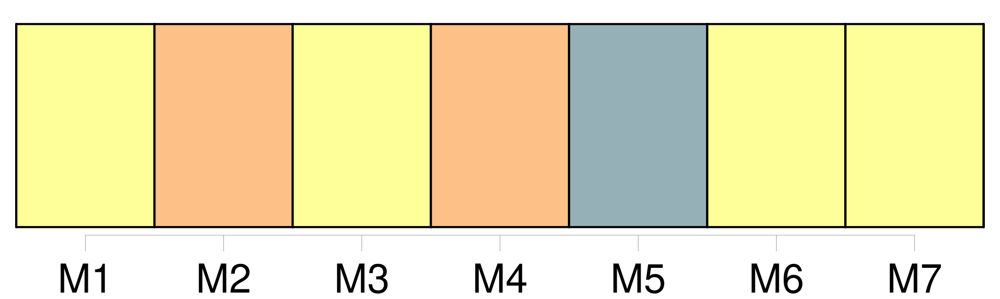

Longueur nb maillons : 18 mentions |
 |
Toute demande en divorce détaillera les faits : elle sera remise, avec les pièces à l'appui, s'il y en a, au président du tribunal ou [au juge] [qui] en fera les fonctions, par l'époux demandeur en personne, à moins qu'il n'en soit empêché par maladie ; auquel cas, sur sa réquisition et le certificat de deux docteurs en médecine ou en chirurgie, ou de deux officiers de santé, le magistrat se transportera au domicile du demandeur pour y recevoir sa demande. [1 phrases] [Le juge] , après avoir entendu le demandeur, et lui avoir fait les observations qu' [il] croira convenables, paraphera la demande et les pièces, et [dressera] procès-verbal de la remise du tout en ses mains.
Ce procès-verbal sera signé par [le juge] et par le demandeur, à moins que celui -ci ne sache ou ne puisse signer ; auquel cas il en sera fait mention. [1 phrases]
[Le juge] ordonnera, au bas de [son] procès-verbal, que les parties comparaîtront en personne devant [lui] , au jour et à l'heure qu' [il] indiquera ; et qu'à cet effet, copie de [son] ordonnance sera par [lui] adressée à la partie contre laquelle le divorce est demandé. [1 phrases]
Au jour indiqué, [le juge] fera aux deux époux, s'ils se présentent, ou au demandeur, s'il est seul comparant, les représentations qu' [il] croira propres à opérer un rapprochement : s' [il] ne peut y parvenir, [il] en dressera procès-verbal, et [ordonnera] la communication de la demande et des pièces au commissaire du Gouvernement, et le référé du tout au tribunal. [1 phrases] Dans les trois jours qui suivront, le tribunal sur le rapport du président ou [du juge] qui en aura fait les fonctions, et sur les conclusions du commissaire du Gouvernement, accordera ou suspendra la permission de citer. |
|
Il est possible de télécharger la ressource sur la page Ortolang |
Si vous avez des questions ou vous voyez des erreurs, merci d'envoyer un mail à silvia.federzoni89@gmail.com |